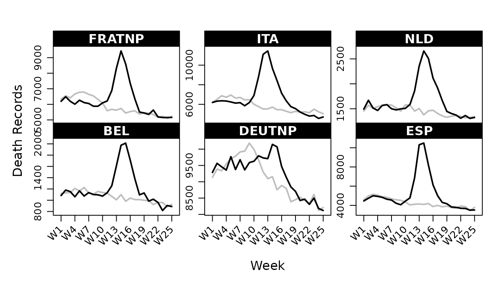
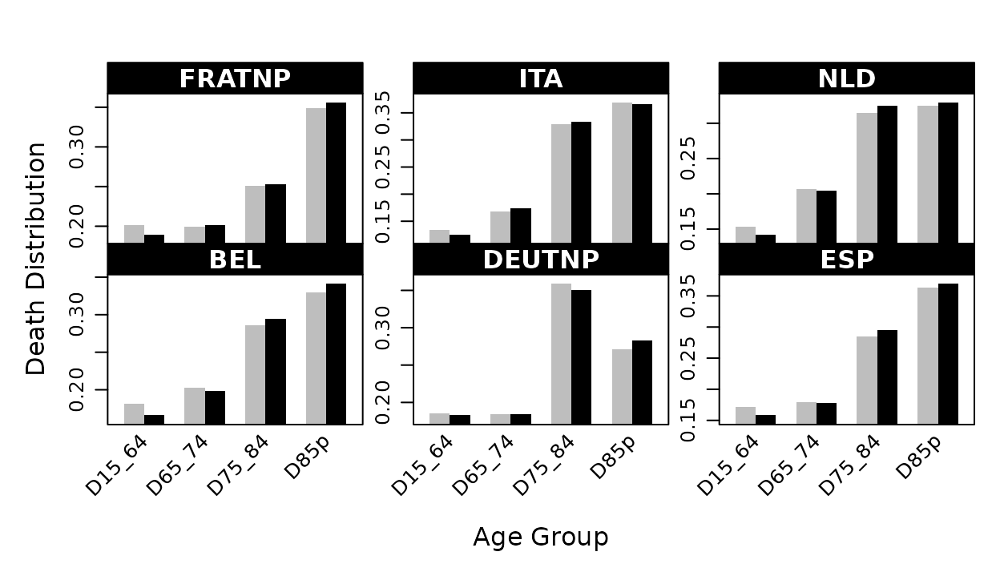

covid19-pairwise-testing
Source:vignettes/covid19-example-pairwiseTesting.Rmd
covid19-example-pairwiseTesting.Rmd
library(admix)
#> Package 'admix' version 2.3.1
#> -------------------------------
#> Type 'citation("admix")' for citing this R package in publications.
#> -------------------------------
#> This work was partly conducted within the Research Chair DIALog under the aegis of the Risk Foundation, an initiative by CNP Assurances.There exists a wide variation in mortality related to COVID-19 pandemic across countries, leading to questioning the extent to which one can proceed to pairwise comparative studies.
As exhibited by the Short-Term Mortality Fluctuations (STMF) dataset from the Human Mortality Database (HMD), the all cause-of-death records in European countries over the first 25 weeks shot up in 2020, as compared to the historical corresponding mortality records exhibited over the previous years. For instance, for France, Italy, Netherlands, Belgium, Germany and Spain, we get:
data(stmf_small)
##### Data preparation:
WEEKS <- 1:25 # weeks of interest
AGES <- c("D15_64", "D65_74", "D75_84", "D85p") # age classes of interest
CNT <- c("FRATNP", "ITA", "NLD", "BEL", "DEUTNP", "ESP") # countries of interest
Year_Benchmark <- 2019 # benchmark period
## Death Records per age class, over years and weeks for males:
tmp <- subset(stmf_small, (CountryCode %in% CNT) & (Week %in% WEEKS) & (Sex == "m"))
tmp <- tmp[ ,c("CountryCode","Year","Week",AGES)]
## Aggregate data based on the three criteria 'Year', 'Country' and 'Week':
require(reshape2)
#> Loading required package: reshape2
data.deaths <- reshape2::melt(tmp, id = c("Year", "CountryCode", "Week"))
colnames(data.deaths) <- c("YEAR","COUNTRY","WEEK", "AGE", "DEATH")
##### Plot deaths per country over weeks:
require(lattice)
#> Loading required package: lattice
require(plyr)
#> Loading required package: plyr
lattice::xyplot(DEATH ~ WEEK | COUNTRY,
groups = YEAR,
data = plyr::ddply(subset(data.deaths, YEAR %in% Year_Benchmark:2020),
.(WEEK, COUNTRY, YEAR),
summarize,
DEATH = round(sum(DEATH))),
type = "l", col = c("gray", "black"), xlab = "Week", ylab = "Death Records", lwd = 2,
scales = list(x = list(rot = 45, cex = .8,
labels = paste("W", seq(1,length(WEEKS),by=3), sep=''),
at = seq(1, length(WEEKS), by=3), alternating = F),
y = "free", tck = c(1,0)),
par.settings = list(
superpose.polygon = list(col="black", border="transparent"),
strip.background = list(col="black"),
strip.border = list(col="black")),
par.strip.text = list(col = "white", font = 2))
On top of this, the mortality profile itself has been largely distorted by the sanitary crisis. Basically, elderly people have been more severely impacted than other classes of age. This is illustrated by the coming Figure:
## Aggregate data over weeks per age group:
data.deaths <- plyr::ddply(subset(data.deaths, YEAR %in% Year_Benchmark:2020),
.(AGE, COUNTRY, YEAR),
summarize,
DEATH = round(sum(DEATH)))
##### Preparing data for the hypothesis testing:
data.d <- stat <- c()
probs_countries <- sample <- vector(mode = "list", length = length(CNT))
## Loop on each country:
for (i in 1:length(CNT)) {
tmp <- NULL ; tmp <- subset(data.deaths, AGE %in% AGES)
sample[[i]] <- vector(mode = "list", length = 2)
## On a given country, sum for each year the number of deaths in each age class:
sample[[i]]$X <- reshape2::dcast(subset(tmp, COUNTRY == CNT[i]), YEAR ~ AGE, value.var = "DEATH",
fun.aggregate = function(x) sum(x, na.rm = TRUE))
sample[[i]]$L <- CNT[i] # name of the country
## On a given country, sum for each age class the number of deaths in each year:
cs <- reshape2::dcast(subset(data.deaths, COUNTRY == CNT[i]), AGE ~ YEAR , value.var = "DEATH",
fun.aggregate = function(x) sum(x, na.rm = T))
stat <- rbind(stat, data.frame(t(colSums(cs[ ,-1])), Geo = CNT[i]))
rownames(cs) <- cs$AGE
## Compute the probability to be in each age class when someone pass away:
cs[ ,-1] <- t( t(cs[ ,-1]) / colSums(cs[ ,-1]) )
data.d <- rbind(data.d, data.frame(melt(cs, id = "AGE"), COUNTRY = paste(CNT[i])))
## Boolean vector to get the benchmark year:
years <- (sample[[i]]$X$YEAR %in% Year_Benchmark)
## Benchmark mortality profile by age class (multinomial probabilities for age class death);
probs <- colMeans(sample[[i]]$X[years,-1]) / sum(colMeans(sample[[i]]$X[years,-1]))
## Format data about events (deaths) for the multinomial distributions for each year (2019 and 2020):
sim <- sample[[i]]$X[sample[[i]]$X$YEAR == Year_Benchmark, -1]
sim19 <- unlist( apply( as.data.frame(1:length(sim)), 1, function(k) { rep(k, sim[k]) } ) )
sim <- NULL
sim <- sample[[i]]$X[sample[[i]]$X$YEAR == "2020", -1]
sim20 <- unlist( apply( as.data.frame(1:length(sim)), 1, function(k) { rep(k, sim[k]) } ) )
probs_countries[[i]] <- list(sim20 = sim20, sim19 = sim19, probs = probs, L = sample[[i]]$L)
}
colnames(data.d) <- c("AGE", "YEAR", "DEATH", "COUNTRY")
## Plot multinomial distribution in 2019 and 2020 for each country:
barchart(DEATH ~ AGE | COUNTRY,
groups = YEAR,
data = subset(data.d, (YEAR %in% 2019:2020) & (COUNTRY %in% CNT) & (AGE %in% AGES)),
col = c("gray","black"),
scale = list(x = list(rot = 45, alternating = 1), y = "free"),
xlab = "Age Group", ylab = "Death Distribution",
par.settings = list(
superpose.polygon = list(col = "black", border = "transparent"),
strip.background = list(col = "black"),
strip.border = list(col = "black")),
par.strip.text = list(col = "white", font = 2))
Such a phenomenon can be interpreted as a contamination of some well-known/regular random behaviour (described here by the mortality distribution) and modelled by using a specific mixture model with cumulative distribution function (cdf) , given by where is a mixture component whose distribution is perfectly known for country (mortality distribution over ages in 2019), whereas and are unknown.
The goal of this vignette is to look at the nodular impact of the COVID-19 and compare the latter across a panel of European countries. For this, we will first capture the regular mortality profile for each country , represented by the cdf . More precisely, in this application, we consider an event indicating whether the COVID-19 pandemic has impacted (directly or indirectly) some given individual, and the random variable indicating the age category for a dead person picked at random during the 25 first week of 2020. Here, is labeled from 1 to 4 (#1=[15-64], #2=[65,74], #3=[75,84], #4=[85,+[). Considering that during the early times of the COVID-19 pandemic, because of the sudden nature of the crisis and the lack of preparation of the countries, all the populations were uniformly (in age) exposed to the virus, we propose to define the cumulative distribution function of by using the following Bayes principle: where the probability of being impacted by COVID-19 is unknown, the probability of death occurring before class given the fact that the person died from a regular cause, i.e. , is known and represents the regular per age mortality distribution, whereas the probability of death happening before class given the fact that the person died prematurely from consequences of the COVID-19 pandemic, i.e. is unknown. Given this modelling of the mortality distribution distortion effect due to the pandemic, we propose to test if some of the European countries included in our panel reacted similarly in terms of mortality over ages in the early stage of the pandemic, or equivalently if some countries had similar ’s components involved in their contamination model.
We now proceed to the pairwise testing across the six countries using the Inversion Best-Matching (IBM) method (warning: you need some time to perform this step, at least ten minutes depending on your machine):
## First, define a function that allows to get the decontaminated version (Inversion step) of the unknown CDF Fi:
#decontaminated_theoCDF <- function(p, COUNTRY) {
# i <- which(CNT == COUNTRY)
# G.probs <- probs_countries[[i]]$probs
# L.probs <- sample[[i]]$X[length(sample[[i]]$X$YEAR), -1] / sum(sample[[i]]$X[length(sample[[i]]$X$YEAR), -1])
# G.X <- stepfun(x = 1:length(G.probs), y = cumsum(c(0, G.probs)))
# L.X <- stepfun(x = 1:length(L.probs), y = cumsum(c(0, L.probs)))
# FX <- function(z) { (1/p) * (L.X(z) - (1-p) * G.X(z)) }
# F.X <- stepfun(x = 1:length(G.probs), FX(0:4))
# return( list(FX = F.X, GX = G.X) )
#}
## Then proceed to the pairwise testing of effects across all countries:
pairwise_res <- vector(mode = "list", length = (length(CNT)*(length(CNT)-1)/2))
counter <- 1
for (a in 1:(length(CNT)-1)) {
for (b in (a+1):length(CNT)) {
X <- Y <- est <- prop <- U.H0 <- df <- NULL
X <- probs_countries[[a]]$sim20
admixMod.X <- admix_model(knownComp_dist = "multinom",
knownComp_param = list("size"=1, "prob" = probs_countries[[a]]$probs))
Y <- probs_countries[[b]]$sim20
admixMod.Y <- admix_model(knownComp_dist = "multinom",
knownComp_param = list("size"=1, "prob" = probs_countries[[b]]$probs))
est <- estim_IBM(samples = list(X,Y), admixMod = list(admixMod.X,admixMod.Y), n.integ = 1000)
prop <- getmixingWeight(est)
if (prod(prop < c(1,1)) == 1) {
U.H0 <- IBM_tabul_stochasticInteg(n.sim = 10, n.varCovMat = 50, samples = list(X, Y),
admixMod = list(admixMod.X,admixMod.Y),
min_size = NULL, parallel = FALSE, n_cpu = 2)
res_test <- decision <- NULL
res_test <- IBM_k_samples_test(samples = list(X,Y), admixMod = list(admixMod.X,admixMod.Y),
sim_U = U.H0$U_sim, conf_level=0.95, parallel=FALSE, n_cpu=2)
# res_test <- IBM_k_samples_test(samples = list(X,Y), admixMod = list(admixMod.X,admixMod.Y),
# n_sim_tab = 10, conf_level = 0.95, parallel= FALSE, n_cpu= 2)
decision <- res_test$reject_decision
## Decontaminated CDF:
# df <- data.frame(AGE = AGES,
# A = diff(decontaminated_theoCDF(prop[1], probs_countries[[a]]$L)$FX(0:5))[1:4],
# B = diff(decontaminated_theoCDF(prop[2], probs_countries[[b]]$L)$FX(0:5))[1:4])
}
obj <- NULL
obj <- list(countries = c(probs_countries[[a]]$L,probs_countries[[b]]$L),
weights = prop,
q95 = ifelse(is.null(U.H0), "Test red light", quantile(U.H0$U_sim, 0.95)),
test = ifelse(is.null(U.H0), "Test red light", decision))#,
# decontamin = df)
pairwise_res[[counter]] <- obj
counter <- counter + 1
}
}It is now time to compare the decontaminated versions of the unknown densities over countries for which the null hypothesis has not been rejected, leading to similar mortality distortions due to COVID-19 pandemic:
## Decontaminated CDFs comparison for all similar effects:
index.decontamin <- which(sapply(pairwise_res, "[[", "test") == FALSE)
#list.plot <- vector(mode = "list", length = length(index.decontamin))
#require(gridExtra)
#for (k in 1:length(index.decontamin)) {
# df <- pairwise_res[[index.decontamin[k]]]$decontamin
# list.plot[[k]] <- barchart(data = df,
# A + B ~ AGE,
# par.settings = simpleTheme(col=c("grey80", "grey20")),
# ylab = "Death Distribution",
# auto.key = list(text = sapply(pairwise_res, "[[", "countries")[ ,index.decontamin[k]],
# space = "top", columns = 2, cex.title = 1))
#}
#expr.plot <- paste("list.plot[[", 1:length(index.decontamin), "]]", sep = "")
#gridExtra::grid.arrange(grobs = lapply(expr.plot, function(x) eval(parse(text = x))), nrow = 2)